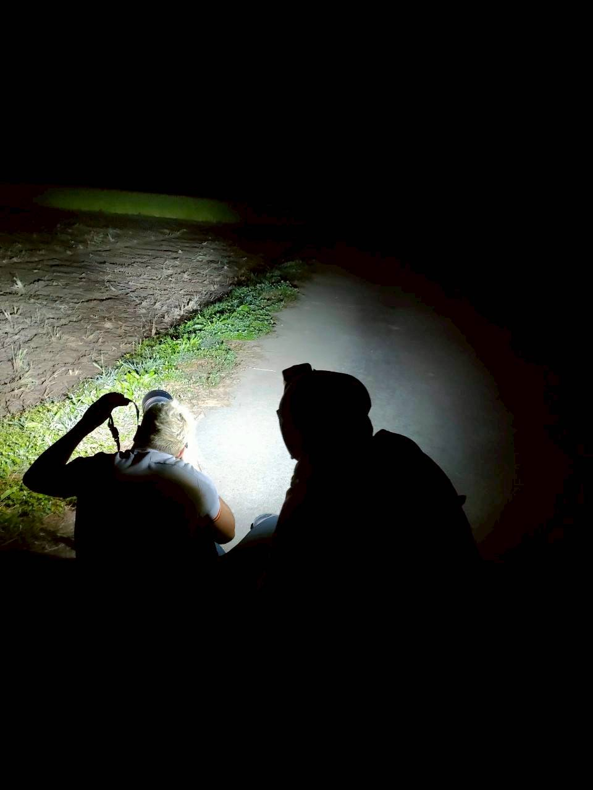
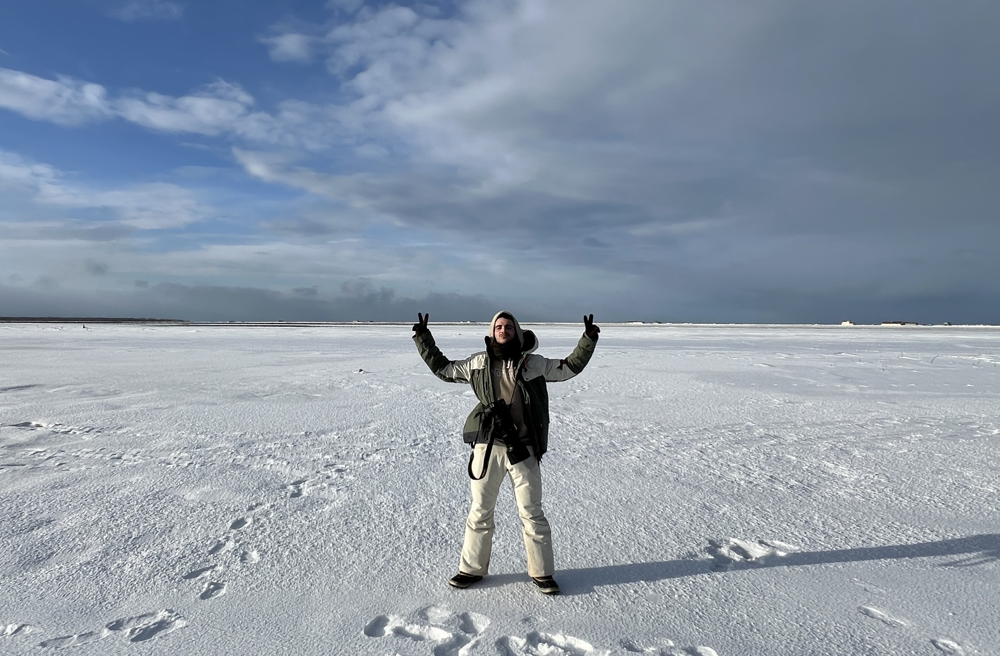

人物紹介
技術と営業、二つの専門性を持つ創業者が現場の課題に向き合い、野生動物調査の未来を共に切り拓きます。

Kaito Tatsumi
営業戦略とビジネス開発の責任者。野生動物保護団体とのパートナーシップを構築し、現場の声を技術へ繋ぐ橋渡し役として、WildCatcherの社会実装を推進しています。

ディエゴ アロンソ
WildCatcherの開発者。AI技術を活用した野生動物調査支援システムをゼロから設計・構築。完全オフライン環境で動作する高精度な画像解析エンジンの実現に取り組んでいます。